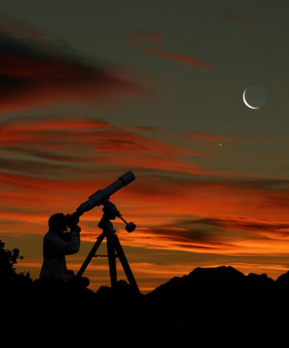

Événements astronomiques
Les événements astronomiques sont des phénomènes célestes qui se produisent à des moments spécifiques. Parmi les événements les plus populaires, on trouve les éclipses solaires et lunaires, les transits planétaires, les pluies de météores, etc. Ces événements offrent souvent des occasions uniques d'observer le ciel nocturne.

Ajouts :
- Calendrier interactif :
L’engouement pour l’observation du ciel et des étoiles ne devrait pas s’essouffler en 2023. Plusieurs phénomènes astronomiques remarquables sont programmés pour cette nouvelle année : pluies de météores, conjonction de planètes, comètes, éclipses rares, super lunes.
Noter les dates permettra de redoubler d’attention ces jours-là, malgré les difficultés qu’il peut y avoir à contempler le ciel et ses manifestations, en fonction de la météo ou des lieux où nous nous trouvons.
2022 fut une année exceptionnelle du point de vue de l’astronomie et des connaissances scientifiques, tout comme des lancements orbitaux, avec un record de 178 lancements réussis, dont la moitié par la Chine et SpaceX.
L’année 2022 marque le début du programme Artemis et le début de la préparation du retour de l’Homme sur la Lune. La mission DART a tout aussi marqué les esprits avec le crash volontaire d’un vaisseau spatial sur un astéroïde afin de le dévier. Et l’image marquante est sans nul doute le premier cliché du satellite spatial James Webb, dévoilant notre univers dans toute sa splendeur. Le cliché contient les plus anciennes galaxies détectées jusqu’à présent. - Techniques d'observation : - Les étoiles et leurs caractéristiques
L’observation des étoiles, contrairement à ce que l’on peut imaginer, ne requiert pas nécessairement des connaissances poussées en la matière. Il vous suffit d’un beau ciel nocturne, d’une nuit claire sans nuages et d’un environnement adéquat pour faire vos premières observations.  Les constellations
En plus des constellations citées précédemment, d’autres sont plus facilement reconnaissables en raison de leur forme et de l’alignement des étoiles.
C’est le cas avec la constellation d’Orion avec ses 3 étoiles qui forment la ceinture, ou la constellation de la Grande Ourse (aussi appelée Grande Casserole ou Grand Chariot) et la constellation de la Petite Ourse.
Les moments clés pour observer les étoiles dans l’année Selon la période de l’année, vous allez pouvoir tantôt des étoiles filantes, tantôt des constellations.
En été : Arcturus, étoile la plus brillante de la constellation du Bouvier. Le Triangle d’été : ensemble d’étoiles qui proviennent de différentes constellations comme l’Aigle, la Lyre et le Cygne.En hiver : période propice à l’observation des étoiles, c’est l’occasion de découvrir des constellations comme la constellation d’Orion avec sa ceinture de 3 étoiles, la constellation des Gémeaux, la constellation du taureau, la constellation du Petit Chien et enfin, Sirius, l’étoile la plus brillante de la constellation du Grand Chien.
Au printemps : ce sont davantage les planètes qui sont observables comme Jupiter, Mercure et Mars. Mais il y a aussi la constellation du Lion et la constellation du Cancer. En automne : les planètes Vénus, Mars (planète rouge), et Saturne sans oublier la constellation de Persée, la constellation de Pégase et la constellation d’Orion. Mais s’il y a une étoile que vous pourrez toujours regarder, c’est l’étoile du Berger, aussi appelée étoile Polaire (ou Polaris). - Phénomènes rares :
Étoiles filantes, éclipse et planètes visibles: 5 phénomènes à voir dans le ciel ce printempsL'une des activités en plein air gratuites les plus fascinantes à faire en solo, en amoureux, entre amis ou en famille au Québec est de regarder différents phénomènes astronomiques dans le ciel québécois une fois la nuit tombée. Parce que personne ne peut rester indifférent devant une pluie d'étoiles filantes! Au cours du printemps 2022, plusieurs événements se produiront dans le ciel du Québec.
Voici les phénomènes astronomiques à mettre à votre calendrier au printemps 2022 :
1. Mercure visible à l'oeil nu
Selon ce que Loïc Quesnel, coordonnateur d’activités scientifiques au Planétarium Rio Tinto Alcan, a confié à MétéoMédia, on pourra voir Mercure à l'oeil nu entre le 13 avril et le 10 mai.
2. Les Lyrides
Les Lyrides sont une pluie d'étoiles filantes qui se produira entre le 15 et le 24 avril. Leur apogée aura lieu pendant la nuit du 21 au 22 avril.
3. Les Êta Aquarides
Cette autre pluie d'étoiles filantes aura lieu entre le 19 avril et le 28 mai. La nuit à mettre à votre agenda : celle du 5 au 6 mai, où il sera possible de voir jusqu'à 20 étoiles filantes à l'heure.
4. Une éclipse lunaire totale
Une éclipse lunaire totale se produira la nuit du 15 au 16 mai 2022. Vous ne courez pas de danger à regarder directement une éclipse lunaire. À l'inverse, une éclipse solaire est très dangereuse lorsque regardée à l'oeil nu.
5. Mars et Jupiter côte à côte
Le 29 mai 2022, Mars et Jupiter seront très proches l'une de l'autre, et seront visibles à l'oeil nu. Elles seront séparées d’une distance plus courte que le diamètre de la pleine lune tel qu'on l'observe depuis la Terre.